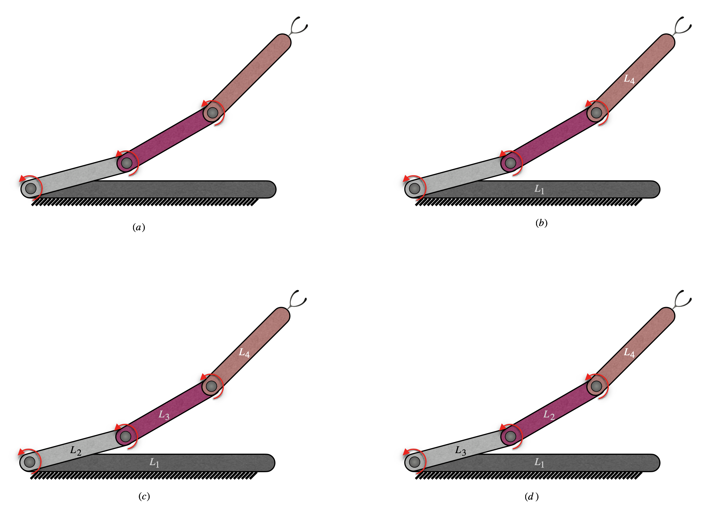
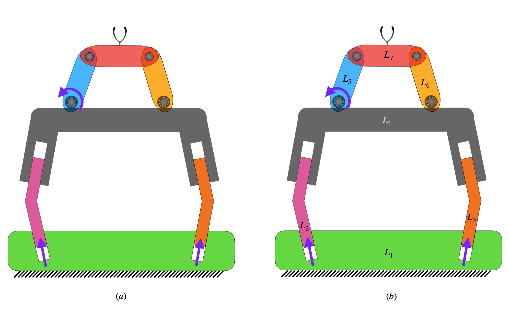
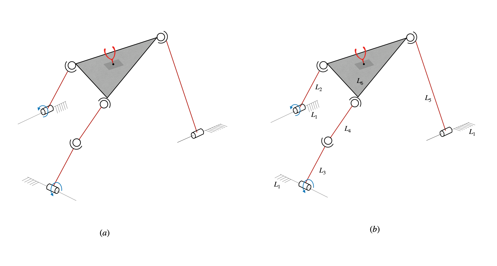

Robot-topology Matrix
Matrix-based representation of robot topology
From graph theory, an adjacency matrix of a mechanism is normally a symmetric matrix in which each diagonal element represents each link and each off-diagonal element represents the connection between the corresponding links. To accommodate the distinction between active and passive joints, the adjacency matrix is modified to form Robot-Topology matrix, such that the upper off-diagonal region is dedicated to represent the connectivity of links whilst the lower off-diagonal region is dedicated to represent whether each corresponding joint is an active joint or a passive. The diagonal elements are normally taken as zeroes but in this study they are filled with ’9’s in order to distinguish the links from the absence of joints which could be helpful from the programming point of view. For linkages of single type of joints, each off-diagonal element is normally taken to be 1 when the two links are directly connected by a joint, and 0 when the two links are not directly connected by a joint. Since the robots in this study could have more than one type of joint, the off-diagonal elements are considered as shown in table 1.
S. No. |
Joint type |
Off-diagonal element |
|---|---|---|
1 |
Revolute (\(R\)) |
1 |
2 |
Prismatic (\(P\)) |
2 |
3 |
Cylindrical (\(C\)) |
3 |
4 |
Spherical (\(S\)) |
4 |
5 |
Universal (\(U\)) |
5 |
6 |
Helical (\(H\)) |
6 |
7 |
Plane (\(F\)) |
7 |
8 |
No joint (\(O\)) |
0 |
Unlike mere mechanisms, robots have a link dedicated to base link and a link dedicated to end-effector link. Hence, the first diagonal element in the matrix is dedicated to the base link and the last diagonal element is dedicated to the end-effector link.
In a serial manipulator, typically all joints are active. However, in parallel manipulators (including closed-loop manipulators), not all joints are active. There could be multiple ways of choosing active and passive sets of joints for parallel ones. The adjacency matrix notation provided in our earlier study [1] does not consist of information on the distinction of active and passive sets of joints but rather considers both the active and the passive joints alike. In this study, this issue is resolved by dedicating the lower off-diagonal elements of the matrix to represent whether they are active joints or not. For every upper off-diagonal element that represents a joint, the corresponding lower off-diagonal element (the corresponding element of its transpose) is assigned the number 1 if the joint is active and 0 if the joint is passive. And every upper off-diagonal element that does not represent a joint, would have the number 0 assigned to its corresponding off-diagonal element.
In ACRoD Jacobian formulation, only revolute and prismatic joints are considered for actuation and hence the other types joints (cylindrical, spherical, universal, helical and planar) can only be passive.
Examples
3R Planar Serial Robot
Let us consider the 3R planar serial robot as shown in (a) of the figure below.
{kind=link}
The above robot has four links (including the fixed link). Hence the Robot-Topology matrix \(M\) would be a \(4\times4\) matrix, with all of its diagonal elements as ’9’s. Since the base link is considered to be the first link and the end-effector link is considered to be the last link, the base and the end-effector links are assigned the names \(L_1\) and \(L_4\) respectively, as shown in (b) of the above figure. Now that the base and the end-effector links are fixed, the other two links can be arbitrarily named. Since there are two links left out, we have \(2!=2\) possible ways of naming them. One way is to name the link that is connected to the base link as \(L_2\) and the link that is connected to the end-effector link as \(L_3\), as shown in (c) of the above figure. Here, we have three revolute joints between \(L_1\) & \(L_2\), \(L_2\) & \(L_3\) and \(L_3\) & \(L_4\). Hence, the pairs of row-column indices of the Robot-Topology matrix in the ascending order, i.e., (1,2), (2,3) and (3,4), would have the corresponding elements of the Robot-Topology matrix as ’1’s. From (a) of the figure, it can be observed by the specified arrows that all the three revolute joints are actuated (as expected in a non-redundant serial robot). Hence, the elements corresponding to the indices of these three actuators (joints) in descending order, i.e., (2,1), (3,2) and (4,3), would be ’1’s. Since there is no joint other than these three joints, the rest of the elements of the Robot-Topology matrix would be zeros. Hence, the Robot-Topology matrix would be as shown below.
Another way is to name the link that is connected to the base link as \(L_3\) and the link that is connected to the end-effector link as \(L_2\), as shown in (d) of the above figure. In that case, the elements (1,3), (2,3) and (2,4) would be ’1’s, indicating the existence of revolute joints. The elements (3,1), (3,2) and (4,2) would be ’1’s, indicating that the corresponding joints, i.e., (1,3), (2,3) and (2,4), are actuators. Hence, the Robot-Topology matrix would be as shown below.
Either matrix can be used as Robot-Topology matrix.
4R-4P Planar Serial-Parallel Hybrid Robot
Let us consider the 4R-4P planar serial-parallel hybrid robot as shown in (a) of the figure below.
{kind=link}
The above robot has seven links. Hence the Robot-Topology matrix \(M\) would be a \(7\times7\) matrix, with all of its diagonal elements as ’9’s. As per the convention, the base and the end-effector links are assigned the names \(L_1\) and \(L_7\) respectively. One possible way of naming the other links is shown in (b) of the above figure. Here, the robot has four prismatic joints between \(L_1\) & \(L_2\), \(L_1\) & \(L_3\), \(L_2\) & \(L_4\) and \(L_3\) & \(L_4\). Hence, the pairs of row-column indices of the Robot-Topology matrix in the ascending order, i.e., (1,2), (1,3), (2,4) and (3,4), would have the corresponding elements of the Robot-Topology matrix as ’2’s. Likewise, the robot has four revolute joints between \(L_4\) & \(L_5\), \(L_4\) & \(L_6\), \(L_5\) & \(L_7\) and \(L_6\) & \(L_7\), and hence, the elements at (4,5), (4,6), (5,7) and (6,7) would be ’1’s. From (a) of the figure, it can be observed by the specified arrows that the joints between \(L_1\) & \(L_2\), \(L_1\) & \(L_3\) and \(L_4\) & \(L_5\) are actuators. Hence, the elements corresponding to the indices of these three actuators (joints) in descending order, i.e., (2,1), (3,1) and (5,4), would be ’1’s. The rest of the elements of the Robot-Topology matrix would be zeros. Hence, the Robot-Topology matrix would be as shown below.
Other possible Robot-Topology matrices can be framed (by changing the numbering of links), which would be equivalent to the above matrix.
RSSR-SSR Spatial Parallel Robot
Let us consider the RSSR-SSR spatial parallel robot as shown in (a) of the figure below.
{kind=link}
The above robot has six links. Hence the Robot-Topology matrix \(M\) would be a \(6\times6\) matrix, with all of its diagonal elements as ’9’s. As per the convention, the base and the end-effector links are assigned the names \(L_1\) and \(L_6\) respectively. One possible way of naming the other links is shown in (b) of the above figure. Here, the robot has four prismatic joints between \(L_3\) & \(L_4\), \(L_4\) & \(L_6\), \(L_2\) & \(L_6\) and \(L_5\) & \(L_6\). Hence, the pairs of row-column indices of the Robot-Topology matrix in the ascending order, i.e., (3,4), (4,6), (2,6) and (5,6), would have the corresponding elements of the Robot-Topology matrix as ’4’s. Likewise, the robot has three revolute joints between \(L_1\) & \(L_2\), \(L_1\) & \(L_3\) and \(L_1\) & \(L_5\), and hence, the elements at (1,2), (1,3) and (1,5) would be ’1’s. From (a) of the figure, it can be observed by the specified arrows that the joints between \(L_1\) & \(L_2\) and \(L_1\) & \(L_3\) are actuators. Hence, the elements corresponding to the indices of these three actuators (joints) in descending order, i.e., (2,1) and (3,1), would be ’1’s. The rest of the elements of the Robot-Topology matrix would be zeros. Hence, the Robot-Topology matrix would be as shown below.
Other possible Robot-Topology matrices can be framed (by changing the numbering of links), which would be equivalent to the above matrix.
References
[1] Jacob, Akkarapakam Suneesh, Bhaskar Dasgupta, and Rituparna Datta. “Enumeration of spatial manipulators by using the concept of Adjacency Matrix.” arXiv preprint arXiv:2210.03327 (2022).